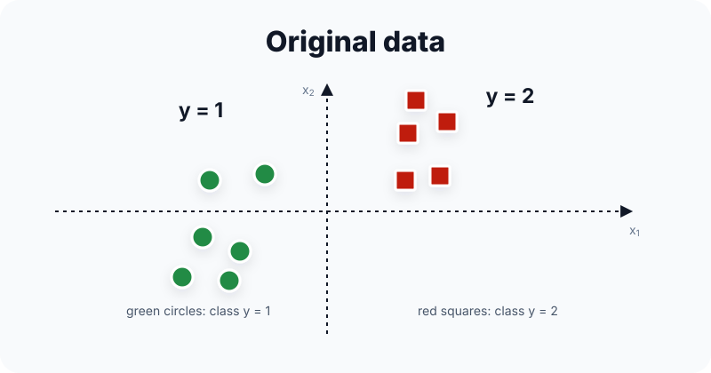
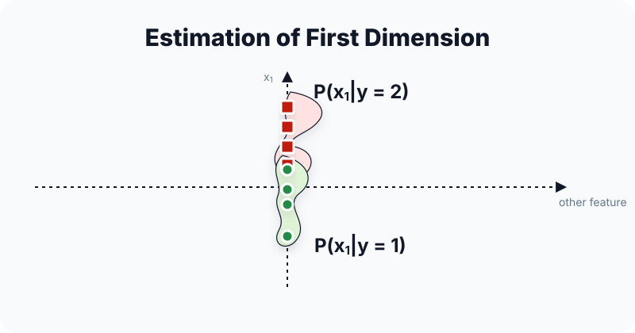
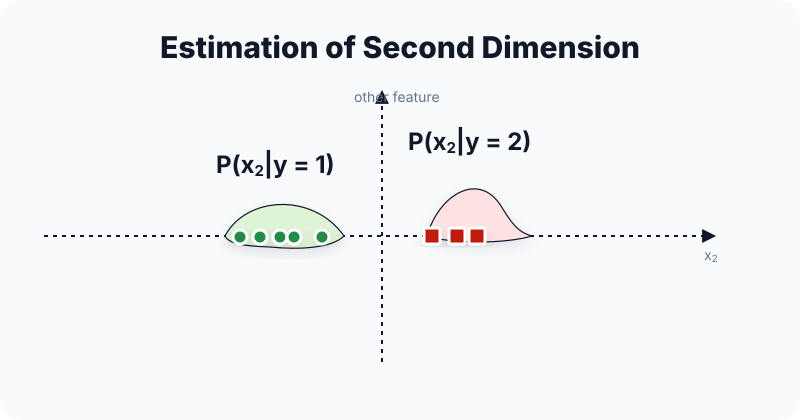
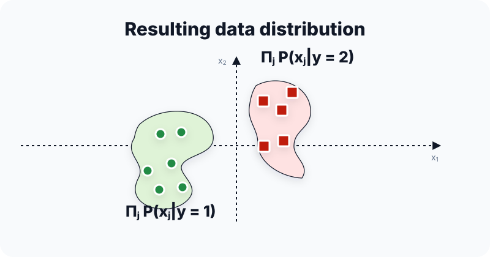

🧮 Naive Bayes朴素贝叶斯
🟦 Naive Bayes
Generative classifier: model P(X, Y) by factoring P(Y) and P(X | Y) under the assumption that, given Y, the features are conditionally independent.




Exam read. Classification asks for the class with the largest posterior. Since $P(X)$ is shared by every candidate class, MAP prediction only needs to compare $P(X\mid Y=y)P(Y=y)$ across labels.
For email classification, $X$ can be the words in the email and $Y$ can be spam vs. normal. $P(\text{spam})=0.3$ is a prior: before reading the email, 30% of messages are spam. $P(\text{contains "free"}\mid\text{spam})$ is a likelihood: among spam emails, how often does the word "free" appear?
The posterior $P(\text{spam}\mid\text{contains "free"})$ is what the classifier actually wants. Evidence $P(X)$ says how common the observed features are overall, but it is the same denominator for every label, so it disappears in the $\arg\max$ comparison.
Factorization + MAP prediction
What it does. Once the class $Y$ is known, Naive Bayes pretends the features stop interacting with each other. The large joint likelihood becomes a product of one-feature likelihoods.
Email example. If $X_1$ means "has free," $X_2$ means "has money," and $X_3$ means "has click," then NB approximates $P(X_1,X_2,X_3\mid Y=\text{spam})$ as $P(X_1\mid Y)P(X_2\mid Y)P(X_3\mid Y)$.
Why it matters. For binary features and binary labels, the full class-conditional table needs about $2(2^d-1)$ free parameters. The naive factorization cuts this to about $2d$, which avoids the sparse-combination problem in high dimension.
What it does. Score each class by prior × likelihood. The prior rewards common classes; the product of likelihoods rewards classes that explain the observed feature values well.
What it does. This is the same MAP decision, just numerically safer. Multiplying many small probabilities can underflow to 0; adding logs stays stable.
Training estimates
What it does. For discrete Bernoulli features, training is maximum likelihood estimation by counts: estimate a class prior and one feature probability per class-feature pair.
What it does. The pseudo-count prevents a never-seen feature value from assigning probability 0 and wiping out the entire product at prediction time.
Discrete NB calculation template
- Count priors: estimate $P(Y=y)$ from how often each label appears in the training set.
- Count likelihoods: inside each class, estimate $P(X_j=x_j\mid Y=y)$ for the feature values in the test example.
- Score each class: compute $\mathrm{score}(y)=P(Y=y)\prod_j P(X_j=x_j\mid Y=y)$.
- Pick the largest: compare scores across labels. If products are tiny, compare log scores instead.
Gaussian Naive Bayes
What it does. For continuous data, each class gets its own little bell curve for each feature. A test value is more likely under a class if it lies near that class's mean with reasonable variance.
Special case. If priors and variances are equal, GNB chooses the class whose mean vector is closest to the test point, using Euclidean distance.
- Supervised: estimates all probabilities from labeled examples.
- Parametric: after training it keeps fixed counts/probabilities, or Gaussian means and variances.
- Generative: models the joint distribution $P(X,Y)=P(Y)P(X\mid Y)$, not only the boundary.
- Often linear for binary classification: Bernoulli NB and shared-variance GNB lead to a linear log-odds score.
- The conditional-independence assumption is strong; NB still works in practice for many tasks.
- Use Laplace smoothing for unseen feature values, otherwise a single zero zeroes out the whole product.
- Write the conditional-independence formula and the MAP rule.
- Explain when GNB has a linear boundary (shared variance).
- Justify log-space inference.
- Compare it with KNN and logistic regression: NB is parametric and generative; KNN stores data and is non-parametric; logistic regression directly optimizes conditional likelihood $P(Y\mid X)$.
🟦 Naive Bayes · 朴素贝叶斯
生成式分类器：建模 $P(X,Y)$（即 $P(Y)$ 与 $P(X|Y)$）。核心假设：给定 $Y$ 时各特征条件独立。
考试读法. 分类就是找 posterior 最大的类别。因为 $P(X)$ 对所有候选 class 相同，MAP 预测只需比较各个 label 的 $P(X\mid Y=y)P(Y=y)$。
做邮件分类时，$X$ 可以是这封邮件里的 words，$Y$ 是 spam vs. normal。$P(\text{spam})=0.3$ 是 prior：还没看邮件内容时，整体上 30% 邮件是 spam。$P(\text{contains "free"}\mid\text{spam})$ 是 likelihood：如果邮件已经是 spam，它包含 "free" 的概率。
真正想要的是 posterior，例如 $P(\text{spam}\mid\text{contains "free"})$。Evidence $P(X)$ 表示这些 features 本身出现的概率；但分类比较不同 labels 时，分母相同，所以 $\arg\max$ 里可以扔掉。
因子分解 + MAP 预测
这个公式在做什么？ 一旦知道类别 $Y$，Naive Bayes 就假设 features 之间“不再互相影响”。于是一个高维联合 likelihood 被拆成很多一维 likelihood 的乘积。
邮件例子. 若 $X_1$ 表示 has "free"，$X_2$ 表示 has "money"，$X_3$ 表示 has "click"，NB 会把 $P(X_1,X_2,X_3\mid Y=\text{spam})$ 近似拆成 $P(X_1\mid Y)P(X_2\mid Y)P(X_3\mid Y)$。
为什么有用. 对 binary features 和 binary labels，完整 class-conditional 表大约需要 $2(2^d-1)$ 个自由参数；Naive factorization 把它降到约 $2d$，高维时不必等待每一种 feature combination 都在训练集中出现。
这个公式在做什么？ 每个 class 的分数 = prior × likelihood。Prior 偏向常见类别；likelihood 衡量这个类别有多能解释当前 observation。
这个公式在做什么？ 这和 MAP 决策完全等价，只是数值更稳。很多小概率连乘会 underflow 成 0；取 log 后变成加法，不容易崩。
训练估计
这个公式在做什么？ 对离散 Bernoulli features，训练就是 maximum likelihood estimation (MLE) by counting：估一个 class prior，再估每个 class-feature pair 的条件概率。
这个公式在做什么？ pseudo-count 防止训练集中没出现过的 feature value 被估成 0，从而在 prediction 时把整串 likelihood product 直接归零。
离散 NB 计算模板
- 数 prior: 从训练集中每个 label 出现次数估 $P(Y=y)$。
- 数 likelihood: 在每个 class 内，统计测试样本对应的 feature values，估 $P(X_j=x_j\mid Y=y)$。
- 算 class score: 对每个类别算 $\mathrm{score}(y)=P(Y=y)\prod_j P(X_j=x_j\mid Y=y)$。
- 选最大: 比较不同 labels 的 score；如果概率乘积太小，就改比 log score。
Gaussian Naive Bayes
这个公式在做什么？ 对连续 feature，每个 class 都给每个 feature 拟合一条小钟形曲线。测试值越靠近该 class 的 mean，且方差解释得合理，likelihood 越高。
特例. 如果 class priors 和 variances 都相同，GNB 会选 mean vector 离 test point 最近的 class，本质是在比 Euclidean distance。
- Supervised: 需要 labeled data 来估概率。
- Parametric: 训练后只保留固定数量的 counts/probabilities，或 Gaussian 的 means/variances。
- Generative: 建模 joint distribution $P(X,Y)=P(Y)P(X\mid Y)$，不只是学 decision boundary。
- 常见情形下是 linear classifier: binary Bernoulli NB 和 shared-variance GNB 都会给出 linear log-odds score。
- 条件独立假设强，不代表真实独立 → 但 NB 在很多任务仍有效。
- 未见特征值需 Laplace 平滑，否则 $P(X_j\mid y)=0$ 让整个乘积归零。
- 写出 NB 条件独立公式 + MAP 预测式。
- 解释 GNB 何时是线性边界（共享方差）。
- 解释为什么用 log-space。
- 会和 KNN / Logistic Regression 对比：NB 是 parametric + generative；KNN 保存训练数据、non-parametric；Logistic Regression 直接优化 conditional likelihood $P(Y\mid X)$。
- 写出 Naive Bayes 条件独立公式。
- 写出 KNN 分类预测规则。
- 用一句话解释为何 Gaussian NB 可能产生线性边界。